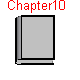
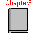
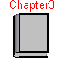
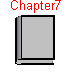
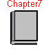

BookExamples
Examples from the book "Introduction to Physical Modeling with Modelica" by Michael Tiller

 



 



Information
The "BookExamples" package includes all the
examples (and component models) from the book "Introduction
to Physical Modeling with Modelica" by Michael Tiller.
The models are organized by what chapter they appear in. Models that
can be translated and run are indicated with a special icon that looks
like a plot.
These models are meant to enhance the content of the book but they
should not be considered a substitute for reading the book.
Updated 25 September 2001 to use 'each' for array of components,
and use array of components to simplify the example Chapter9/ParticleBeam.
HTML-documentation generated by Dymola Wed Sep 10 16:47:29 2003
.